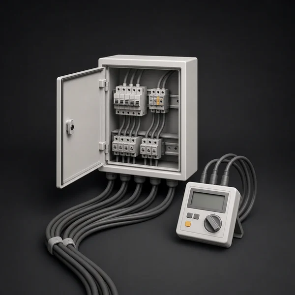
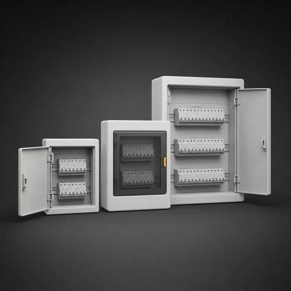
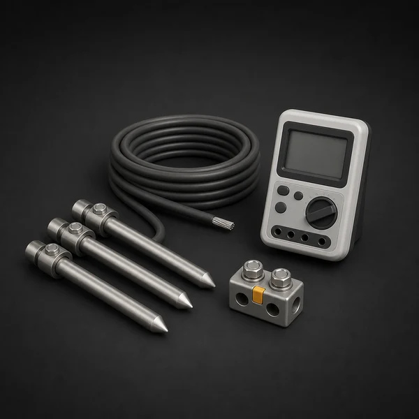
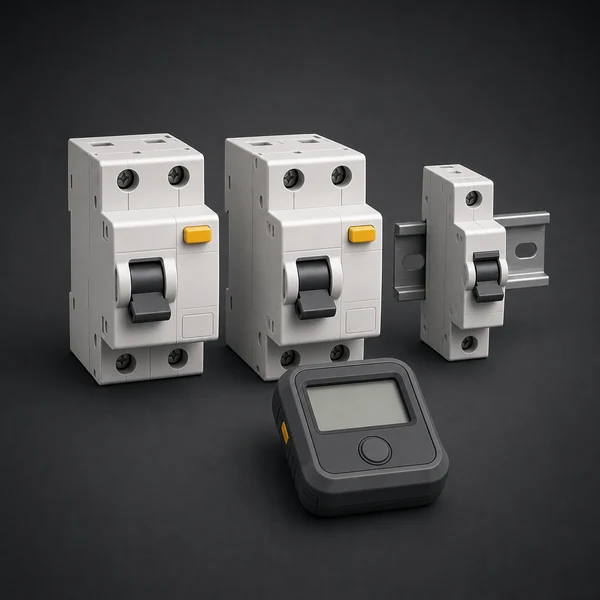
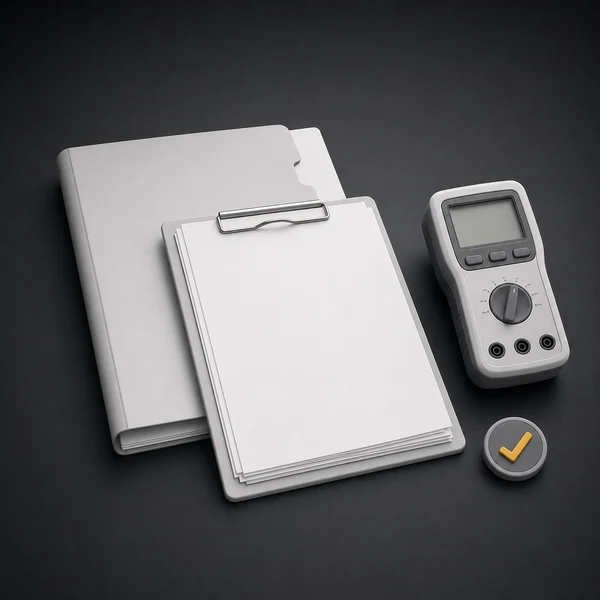
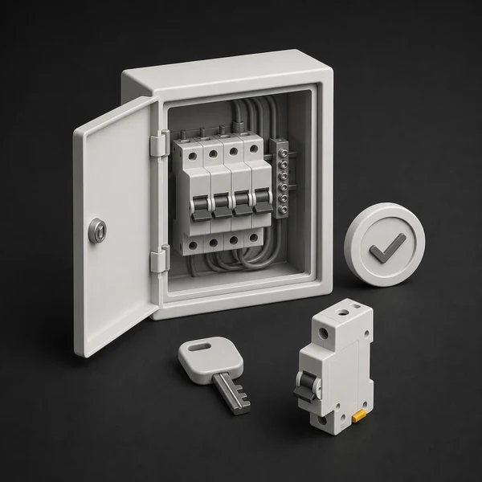

Сдача объекта
Измерения после монтажа, реконструкции или перед вводом электроустановки в эксплуатацию.
 Elecround
Elecround
Измерения, испытания и диагностика электроустановок до 1000 В с подготовкой протоколов для эксплуатации, проверок и сдачи объекта.
Выездная электролаборатория Elecround проводит электроизмерения в Москве и Московской области. Проверяем фактическое состояние линий, щитов, заземления, защитной автоматики и электрооборудования.
Проводим измерения и испытания электроустановок до 1000 В. По результатам готовим протоколы электроизмерений, технический отчет, перечень замечаний и рекомендации по устранению рисков.
Выезд электролаборатории особенно полезен, когда нужно подтвердить безопасность, подготовить документы или найти причину нестабильной работы электрики.
Измерения после монтажа, реконструкции или перед вводом электроустановки в эксплуатацию.
Поиск причин отключений, нагрева, просадок напряжения и срабатывания защитной автоматики.
Протоколы электроизмерений, технический отчет, замечания и рекомендации для эксплуатации.
Проверяем электроустановку после монтажа или реконструкции перед передачей в эксплуатацию.
Узнать большеПроводим плановую проверку действующих электроустановок, чтобы вовремя найти риски и подготовить документы.
Узнать большеОформляем результаты измерений в понятный комплект документов для эксплуатации, сдачи объекта и устранения замечаний.
Узнать большеОсматриваем щиты, линии, маркировку, доступность обслуживания и признаки перегрева до проведения измерений или ремонта.
Узнать большеПроверяем непрерывность защитных цепей между заземленными элементами, щитами, оборудованием и PE-проводниками.
Узнать большеПроверяем состояние изоляции кабелей, проводки и оборудования, чтобы выявить риски пробоя, утечек и перегрева до аварии.
Узнать большеПроверяем, сможет ли защитная автоматика отключить питание при коротком замыкании в конце линии.
Узнать большеПроверяем соответствие автоматов фактическим линиям, нагрузкам и условиям безопасного отключения.
Узнать большеПроверяем устройства защитного отключения по току и времени срабатывания, чтобы защита не была просто кнопкой в щите.
Узнать большеПроверяем заземляющие устройства, защитные проводники и цепи, которые отвечают за безопасное отключение при аварийных режимах.
Узнать большеПроверяем заземляющее устройство, фиксируем результаты измерений и готовим документы для эксплуатации, сдачи объекта или закрытия замечаний.
Узнать большеПроверяем щиты, соединения и оборудование тепловизором, чтобы найти перегрев до аварии или отключения.
Узнать большеПомогаем разобраться с просадками напряжения, перекосом фаз, отключениями и нестабильной работой оборудования.
Узнать большеИзмеряем освещенность рабочих, торговых и технических зон, чтобы понять, хватает ли света для безопасной эксплуатации.
Узнать большеПроверяем распределительные щиты, ВРУ и ГРЩ: состояние коммутации, защитной автоматики, шин, маркировки, нагрева и доступности обслуживания.
Узнать большеДля электролаборатории заранее уточняем тип объекта, состав электроустановки, доступ к щитам, окна отключений и документы, которые нужны после проверки.

Квартиры, апартаменты и частные дома.
Учитываем планировку и доступ. Для жилых помещений заранее уточняем количество групп, состояние щита, доступ к помещениям, сроки и требования управляющей компании.
Цена зависит от количества линий, щитов, УЗО, точек заземления и состава технического отчета. Для быстрого расчета достаточно прислать схему, фото щитов или список проверяемых групп.
Посмотрите ориентиры стоимости измерений, испытаний и подготовки технического отчета.
Узнать большеРассчитайте примерную стоимость электролаборатории по количеству линий, щитов и УЗО.
Узнать большеЧем больше отдельных линий, тем больше точек проверки и фиксации результатов.

Количество щитов влияет на доступ, идентификацию групп и длительность выезда.

Заземление и PE-цепи проверяются по точкам и по доступности контуров.

Проверка УЗО и автоматики требует отдельного времени на измерения и тесты.

На объем работ влияет, нужны ли протоколы, отчет и рекомендации.

Для действующих объектов заранее согласуем окна отключений и доступ к щитам.

Определяем, какие измерения нужны: для сдачи, эксплуатации, диагностики или устранения замечаний.
Фиксируем перечень электроустановок, линий, щитов и оборудования, которые нужно проверить.
Проводим проверку на объекте, фиксируем результаты и замечания, если они обнаружены.
Готовим протоколы, объясняем выводы и подсказываем, что нужно исправить в первую очередь.
Помогают однолинейная схема, план помещений, список щитов, количество линий и цель проверки. Если документов нет, объем можно уточнить по фото и осмотру.
Да, можно заказать отдельные измерения: заземление, изоляцию, УЗО, петлю фаза-ноль или диагностику конкретного щита.
Да, измерения после монтажа помогают подтвердить качество работ и найти замечания до начала эксплуатации.